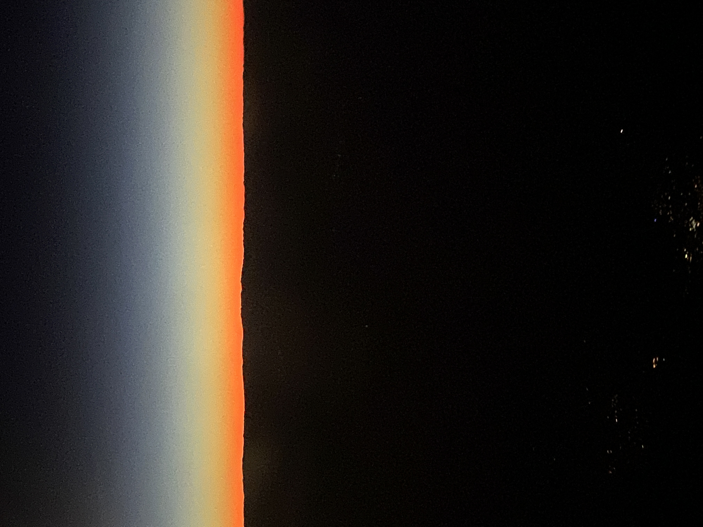
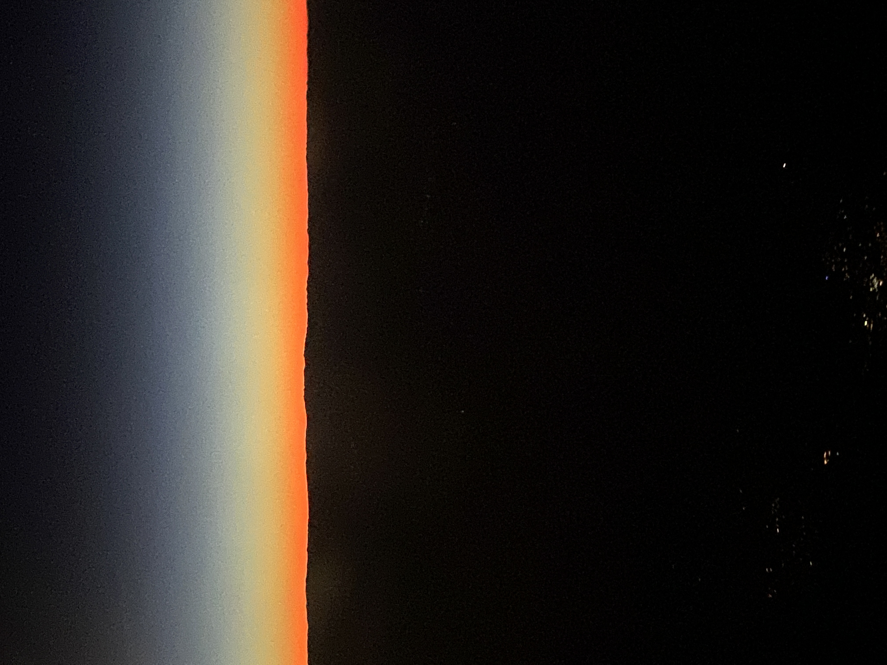

These are photographs of sky that I took in different cities I visited. I love taking photos of sky during different times of the day as well as during different weather conditions. Many of my sky photos are during sunsets or sunrises, however, I also have multiple photos of the sky during the day and night. While sunrises and sunsets are exciting, sky can be just as beautiful without many colors presen when it is simply blue or dark.
Each photo of sky is extemely unique, almost like a painting, you can see a wide range of colors depending on many factors, this excites me and also encurages me to take a closer look into the sky while I walk or simply look through my window. I like analyzing it and looking back to my photos and see if I have a photo of the sky from the same place on different days.


 
